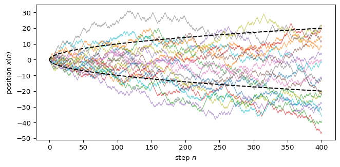

The Random Walk
Module 3: Modelling with Randomness
Reading
- Compulsory: (berg1993random?), Chapters 1 and 2.
- Recommended: (britton2003essential?), Chapter 5 (Biological Motion).
A random walk is a sequence of positions in which each step is random and independent of the previous ones. Karl Pearson named the problem in a letter to Nature (pearson1905problem?). In the same year Einstein’s theory of Brownian motion described a suspended particle through many independent displacements (einstein1905bewegung?). In this module you use random walks to model diffusing molecules, heavy-tailed fluctuations and prices.
The one-dimensional lattice walk
Follow (berg1993random?). A particle starts at \(x = 0\) at time \(t = 0\) and obeys three rules:
- Every \(\tau\) seconds it steps a distance \(\delta\) to the right or to the left.
- It steps right with probability \(p\) and left with probability \(q = 1 - p\), independently of earlier steps.
- Different particles move independently of each other.
After \(n\) steps the position is a sum of independent steps \(\xi_i \in \{+\delta, -\delta\}\):
\[ x(n) = \sum_{i=1}^{n} \xi_i . \tag{1}\]
Mean and variance
Each step has mean \((p - q)\delta\) and variance \(4pq\,\delta^2\). Means and variances of independent variables add, so
\[ \langle x(n) \rangle = n (p - q)\,\delta, \qquad \operatorname{Var}[x(n)] = 4 n p q\, \delta^2 . \tag{2}\]
This agrees with the binomial derivation in (berg1993random?, Eqs. 1.15 to 1.20). For the unbiased walk, \(p = q = 1/2\), the mean stays at zero and \(\langle x^2(n) \rangle = n\delta^2\). The typical distance from the origin grows as \(\sqrt{n}\), not as \(n\).
Exercise
Simulate 5000 walkers for 400 steps with \(p = 0.6\) and \(\delta = 1\) using simulate_lattice_walk. Compare the sample mean and variance of \(x(400)\) with Equation 2.
Solution
The theory gives \(\langle x \rangle = 400 \cdot 0.2 = 80\) and \(\operatorname{Var} = 4 \cdot 400 \cdot 0.6 \cdot 0.4 = 384\).
from amlab.random_walks import simulate_lattice_walk
rng = np.random.default_rng(0)
x = simulate_lattice_walk(5000, 400, p=0.6, rng=rng)
print(f"mean {x[:, -1].mean():7.2f} (theory 80)")
print(f"variance {x[:, -1].var():7.2f} (theory 384)")mean 79.92 (theory 80)
variance 394.05 (theory 384)What the model leaves out
The lattice walk ignores inertia: successive steps are uncorrelated. (berg1993random?) estimates that a protein such as lysozyme in water takes about \(10^{12}\) such steps per second, so the memory of each step is lost almost at once. Walks with memory or with long jumps behave differently; you meet one kind in Lévy flights.
Next: Mean Squared Displacement.